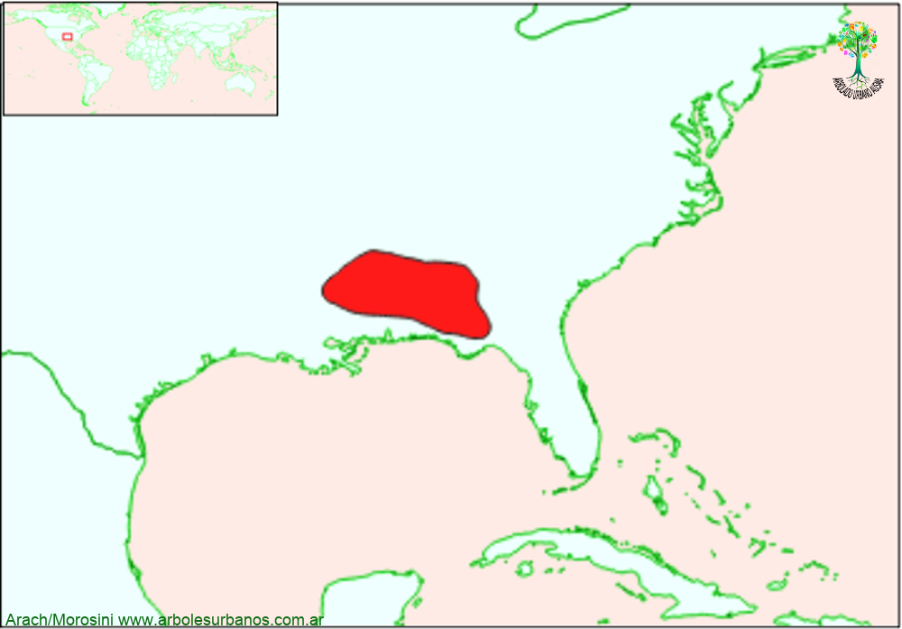

Click en las imágenes para ampliar

{kind=link}
{kind=link}
{kind=link}
{kind=link}
{kind=link}
{kind=link}
- NOMBRE CIENTÍFICO
- Catalpa bignonioides
- FAMILIA BOTÁNICA
- Bignoniáceas.
- DESCRIPCIÓN GENERAL
- Árbol mediano entre 8 y 15 metros de altura, aunque puede pasar los 20 metros. Posee una copa de forma redondeada, o anchamente extendida, que parte de un tronco único, se divide a baja altura. En su estado natural puede superar el metro de diámetro a la altura el pecho. Tiene una corteza de color pardo-rosada o gris, escamosa o arrugada en la adultez. Sus hojas son de forma acorazonadas (de hasta 25 cm. de largo y 20 cm. de ancho) tiene de un límpido color verde en la cara superior y de un verde pálido en la inferior, pude ser algo pubescente en las primeras etapas de desarrollo; cuando llega el otoño, su color se vuelve amarillo oscuro antes de caer.
- FLORES
- Florece de mediados a fines del verano. Tienen forma acampanada, de color blanco con estrías amarillas y puntos de color violáceo en el interior, se agrupan en panículas de más de 20 cm. de largo.
- FRUTOS
- Los frutos cuelgan péndulos, son cápsulas con forma de vainas de 40 cm. o más, de color verde claro al principio, oscureciéndose a fines del otoño, permaneciendo en la planta hasta la primavera siguiente, donde se abren longitudinalmente, liberando semillas de color blanco y consistencia papirácea.
- ORIGEN
- Esta especie es nativa del sudeste de los Estados Unidos, en los estados de Florida, Georgia, Alabama Lousiana y Misissipi. Forma bosques marginales en galerías, a la vera de arroyos y ríos. Más al centro y norte de Estados Unidos, existe otra especie, la llamada Catalpa norteña (Catalpa speciosa) de mayor porte, superando los 30 metros de altura.
- USOS
- Produce una madera dura que se ha utilizado para postes y construcciones rurales en su área de distribución natural. Fuera de su área de origen se la utiliza mucho en arbolado urbano y en parques.
- REPRODUCCIÓN
- Su multiplicación se puede hacer fácilmente, por medio de semillas, previo almacenamiento en seco durante el invierno a temperatura ambiente y se siembran a fines de la primavera. Tienen alto poder germinativo, superior al 60%, sin requerir tratamiento previo. También se la puede multiplicar por estacas semileñosas.
- PARTICULARIDADES
- Los frutos se recogen cuando son de un color oscuro. Las semillas pueden conservarse hasta dos años.